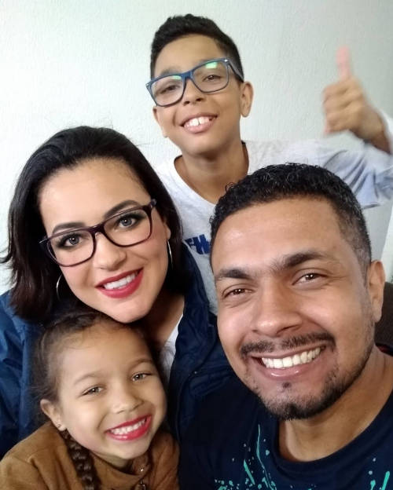

Isaias Santana dos Santos
Esse sou eu! Nascido no dia 07 de Maio de 1984 na cidade de São Paulo-SP. Quando pequeno morei um um tempo no estado do Pernambuco e Bahia, mas na maior parte do tempo em São Paulo.
Ao longo da minha vida trabalhei muitos anos com pessoas nos ramos de transportes e comercial, onde neste segundo, comecei a trabalhar com 14 anos onde adquiri a experiência fundamental para lhe dar com pessoas elevando meu relacionamento interpessoal. No varejo tenho em média 15 anos de experiência em diversos cargos, desde os mais simples até gerente de loja.
Ainda trabalhando no varejo, me casei aos 21 anos de idade em 2007. Em 09 de Setembro de 2013 resolvi que queria algo a mais na minha vida, e com minha esposa e filho nos mudamos para São josé dos Campos-SP, onde após uma breve experiência no comercia da cidade, me fez ver que não era isso que eu estava a procura, queria algo diferente, algo novo.
O ano de 2014 foi marcante para mim, pois nesse ano nasceu minha filha (eu sempre pedi a Deus por um casal e Ele me atendeu!), e junto com meu irmão resolvemos comprar um veiculo de transporte de cargas, e juntos percorremos várias partes do Brasil, conhecendo muitos lugares lindos. Trabalhei por um ano com meu irmão. Após esse período entrei em uma transportadora que trabalhei por mais 3 anos. Mas no fundo eu sentia que não era isso que eu tanto procurava.

Em 2020, depois de ter concluido alguns cursos ministrados pela Digital Innovation One fiquei muito interessado e quiz conhecer mais sobre a tecnologia, gostei tanto que no mesmo ano, iniciei um curso tecnico superior de Análise e Deaenvolvimento de Sistemas.
Hoje aos 37 anos de idade estou iniciando o 3º semestre do meu curso e posso dizer que sou apaixonado por tecnologia, pois quanto mais eu aprendo, mais quero aprender.
E após uma longa procura em diversos lugares, encontrei o que tanto procurava, que é o que me faz perder o sono pensando nos códigos que estou desenvolvendo ou nas funções que posso criar. Que ataca minha ansiedade antes de sentar-me a frente do computador, a menina dos meus olhos, o meu desafio.
Até que fim encontrei o que tanto procurava! Quer saiber mais? Visite minhas redes sociais.